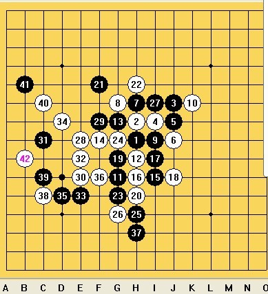

抓紧补图
抓紧补图我跟季末的对局，我执黑，季末执白棋。疏星开局。
季末是我们家一个很厉害的角色，据传闻，他下的瑞星出神入化，偶怕怕滴，就开了个疏星，他不交换，选了2打。前面的20手都是毫无风险，但是暗藏杀机。

27手之后，我丢先手了，他在E8一个跳活三同时跟14、24形成了一个眠三。我只能在中间的F9挡一手，断掉他上方跟右边的链接，他在E6做了一手棋，形成两个活2一个眠三，这下我可难受了，他左边的材料够多了，两个眠三两个活2/*760*90，创建于2012-2-9*/ var cpro_id = 'u761865';
 小四你人品不好吧图片看不到
小四你人品不好吧图片看不到抓紧补图
 师傅 支持一下
师傅 支持一下